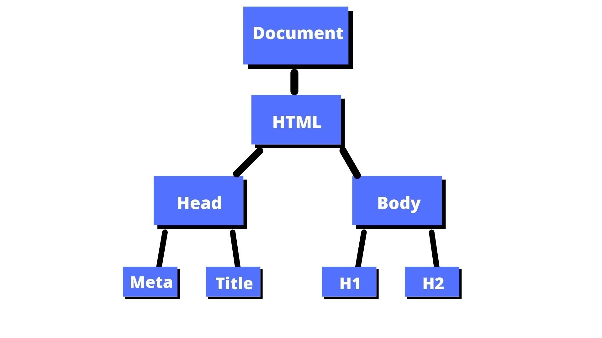

Control flow in Javascript refers the way how JS control the order in which code is executed. In general , it is like following your normal routine day by day. For exampl if we consider your normal meals a day, you would have a routine like this:
Loops in Javascript are used to repeat a serie of instructions or code until a certain condition is met. For example if we would go to the gym to do some exercise, we could have a routine like this:

DOM stands for Document Object Model, and it is a way to represent the structure of a web page in a tree-like format. It allows us to access and manipulate the elements of a web page using JavaScript. For example, if we consider a web page as a tree, the DOM would be like the branches and leaves of that tree, where each element is a node in the tree.

Suppose you have and HTML page like this: